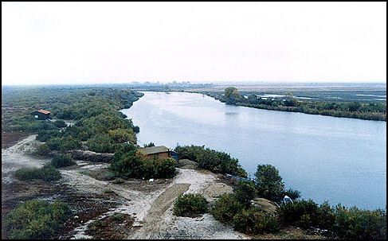
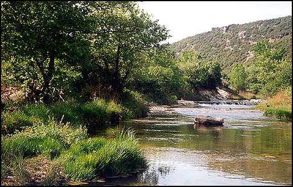

Ο Έβρος είναι ένας από τους μεγαλύτερους ποταμούς της Βαλκανικής χερσονήσου. Πηγάζει από τη ψηλότερη κορυφή Μουσαλά (2.925 μ.) της οροσειράς Ρίλα (το αρχαίο Σκόμιο) κοντά στη Σόφια της Βουλγαρίας.
Συνολικό μήκος π. `Εβρου: 530 km.
Μήκος π.`Εβρου σε Ελληνικό έδαφος: 204 km.
`Εκταση λεκάνης απορροής π. `Εβρου: 52.000 km² εκ των οποίων
Παραπόταμοι:
Ο Έβρος είναι ένας από τους μεγαλύτερους ποταμούς της Βαλκανικής χερσονήσου. Πηγάζει από τη ψηλότερη κορυφή Μουσαλά (2.925 μ.) της οροσειράς Ρίλα (το αρχαίο Σκόμιο) κοντά στη Σόφια της Βουλγαρίας.
Ο ποταμός ρέοντας νότια-ανατολικά εισέρχεται στην Ελλάδα όπου και αποτελεί το φυσικό σύνορο μεταξύ `Ελλάδας και Βουλγαρίας για ένα μικρό τμήμα από το Ορμένιο έως τα Μαράσια. Από την περιοχή αυτή εισέρχεται και διαρρέει την Τουρκία. Στο τμήμα του αυτό συναντιέται με τον Τούντζα και τον `Αρδα κοντά στην Αδριανούπολη και από εκεί εισέρχεται στη Νέα Βύσσα και μέχρι τις εκβολές του αποτελεί την Ελληνοτουρκική μεθοριακή γραμμή. Μετά τις Φέρες ο ποταμός διακλαδίζεται σε δύο βραχίονες. Εκβάλλει στο Θρακικό Πέλαγος δημιουργώντας στις ακτές ένα εκτενές και πλούσιο δέλτα, περίπου 200.000 στρ. Από αυτά τα 150.000 στρ. ανήκουν στην Ελλάδα ενώ τα υπόλοιπα ανήκουν στην Τουρκία. Η Τουρκική έκταση δεν ανήκει στους υγροτόπους Ραμσάρ.
Μαρίτσα αποκαλούν το ποτάμι οι Βούλγαροι και Μέριτς οι Τούρκοι.
Μεγάλοι παραπόταμοί του είναι ο Αρδας (έχει τις πηγές του στις κορυφές της βόρειας Ροδόπης κοντά στο Σμολιάν και διασχίζοντας τη Βουλγαρία και μέρος του νομού `Εβρου συναντάει τον `Εβρο ποταμό στο ύψος της Αδριανούπολης), ο Ερυθροπόταμος ή Ερυθροπός (πηγάζει από τη νοτιοανατολική Ροδόπη, διαρρέει κάθετα σχεδόν το νομό `Εβρου και συναντάει τον `Εβρο ποταμό στο ύψος του Διδυμοτείχου), ο Τούντζας ή Τόνζος (πηγάζει από την οροσειρά του Αίμου, διασχίζει τη Βουλγαρία και την Τουρκία και συναντάει τον `Εβρο ποταμό στο ύψος της Αδριανούπολης) και ο Εργίνης ή Αγριάνης (διαρρέει την Τουρκία και συναντά τον `Εβρο ποταμό στο ύψος της πόλης Κύψελα ή `Ιψαλα τουρκικά).

Διαβολόρεμα, Καμηλοπόταμος, Μεγάλο Ρέμα είναι μερικοί από τους μεγαλύτερους παραποτάμους του Έβρου στο νομό.
Η γειτνίαση του υδάτινου συστήματος του ποταμού Έβρου με τον ορεινό όγκο της Ροδόπης, δημιούργησε μια σειρά οικοσυστημάτων τόσο στο νομό αλλά και στην ευρύτερη περιοχή των γειτονικών κρατών, με μεγάλη ποικιλία βιοτόπων, με πλούσια πανίδα και χλωρίδα. Η εντυπωσιακή αυτή βιοποικιλότητα, μοναδική στην Ευρώπη, οφείλεται στη γεωγραφική θέση της σε συνδυασμό με τις κλιματολογικές συνθήκες, το ανάγλυφο της περιοχής και τις ήπιες ανθρωπογενείς επιδράσεις.
Από τη Σαμοθράκη με τη ψηλότερη βουνοκορυφή το Φεγγάρι (1650 μ.) και τα παράλια του `Εβρου μέχρι τα βόρεια όρια του νομού, συναντά κανείς όλα σχεδόν τα είδη της ευρωπαϊκής βλάστησης, από τα ψυχρόβια δάση μέχρι τη μεσογειακή μακία.
Στα εκτετάμενα δάση του `Εβρου και στα φαράγγια, στις ρεματιές και στις κοιλάδες, στους υγροτόπους, στα μεγάλα ή μικρά ποτάμια που διασχίζουν το νομό βρίσκουν ακόμα καταφύγιο πολλά είδη της άγριας πανίδας μοναδικά στην Ελλάδα αλλά και στην Ευρώπη όπως ο λύκος, το τσακάλι, η αγριόγατα, το αγριογούρουνο, το ζαρκάδι, η βίδρα και σε τυχαίες εμφανίσεις στα ορεινά του νομού η καφετιά αρκούδα.